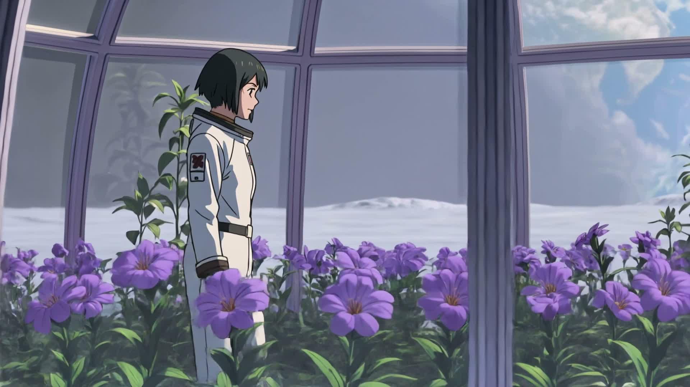

BEHIND FABLEBRINK
Make people want to stay for the story.
The first version looked like a collection of illustrated ideas. I wanted the next version to feel like a place to discover and watch something.

The question behind the design
How can an anime inspired streaming concept offer the richness of a catalog without overwhelming someone who just wants to find their next story?
This is an independent design exercise. The problem framing is a hypothesis, not a finding from user interviews.
What changed
I expanded the collection from seven titles to sixteen, with eight films and eight series. Each has a premise, artwork, a format, a genre, and a mood. Two titles now have original animated previews with sound. The other titles clearly explain that playable media is not available.
The home page is organized around curated collections. Wide artwork supports fast browsing, portrait artwork gives another collection a different rhythm, and an editorial feature slows the pace for one story.
Dark viewing areas contrast with a lighter browsing catalog. The title treatment uses DM Serif Display, while DM Sans keeps navigation and supporting information straightforward. Lime actions add energy without competing with the artwork.
From inspiration to decisions
I used MUBI’s viewing service and film database as references. MUBI’s emphasis on hand curation informed a stronger editorial approach. I kept Fablebrink’s identity, original fictional catalog, and anime inspired art direction.
Themed collections help someone begin with a feeling. A clear film or series destination helps someone who already knows the format they want. Search and filters remain available when browsing is not enough.
A complete path into a title
Each title has its own URL, a synopsis, a short editorial note, availability, a save action, and related stories. Series have proposed episode lists with names hidden until requested. Films do not inherit an episode interface.
Related stories are matched by genre or mood. The interface does not pretend to have viewing data, ratings, awards, or a recommendation model.
Motion with a purpose
The featured background uses a muted animated preview with a visible pause control. Reduced motion preferences stop background playback. The foreground player starts only when requested and provides native sound, seeking, captions, and fullscreen controls.
The available previews are seven and ten seconds long. They are original animated teaser scenes, not full episodes. During the frame review, an inconsistent extra figure appeared near the end of the train scene, so that portion was removed.
Respect for the source of inspiration
These are anime inspired fictional concepts, not claimed Japanese productions. The catalog does not invent studios, voice casts, release dates, festival honors, or language tracks. OffbeatPanels entries remain proposed creative treatments.
Background reading included JAPAN HOUSE Los Angeles: WAVE and the Association of Japanese Animations. Neither organization has reviewed or endorsed the project.
The process is visible
The Figma file includes current desktop and phone layouts, connected discovery and saved title flows, reusable cards and controls, and archived earlier iterations. The current designs use the website’s catalog, fonts, colors, and artwork. The browser remains the reference for playback and dynamic state. A visual comparison in the browser is still needed.
What has been checked
Twelve automated checks cover catalog behavior, saved state, per title progress, media references, artwork references, and base text contrast. Both preview files contain 1080p video and audio. Extracted frames were inspected for scene continuity.
Browser interaction, screen reader behavior, contrast over moving imagery, and participant usability still require testing. No user outcomes or Section 508 compliance claims are made.
Read the requirement checklist | Read the accessibility notes